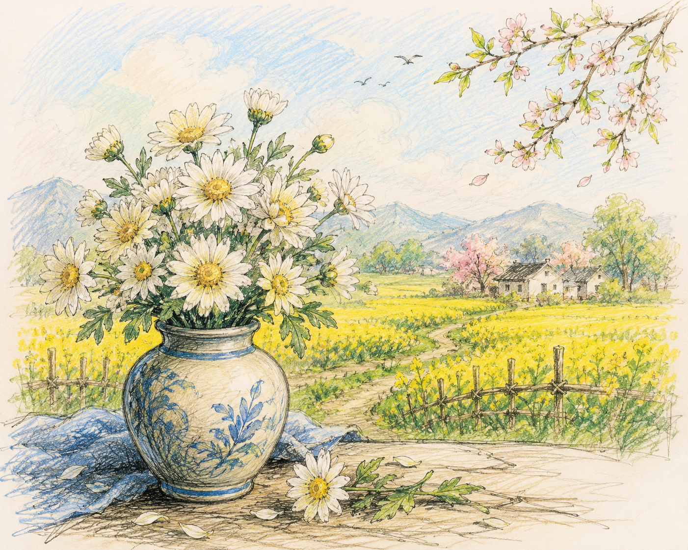

"Bài thơ Cánh đồng của nhà thơ Ngân Hoa là một tiếng nói trữ tình hiện đại, nơi thế giới tự nhiên và tâm hồn con người giao thoa sâu sắc. Đọc văn bản giúp người đọc khám phá nhịp điệu tự do, sự phóng khoáng trong hình ảnh thơ và những suy tưởng độc đáo về sự sống, sáng tạo nghệ thuật."
1 Cảm nhận nhịp điệu & hình ảnh thơ: Cảm nhận sự biến hoá của nhịp điệu, sự phóng khoáng trong cách xây dựng hình ảnh thơ, sự dụng công trong cách tổ chức mạch thơ.
2 Dòng chảy cảm xúc & suy tưởng: Lắng nghe dòng chảy cảm xúc và suy tưởng của nhân vật trữ tình được biểu hiện sống động, sắc nét trong sự tự do của hình thức thơ ca.

Hình 1: Hình ảnh minh hoạ hoa cúc, bình gốm và cánh đồng mùa xuân (h1.png)
Những đốm cúc vừa hái về từ cánh đồng mùa xuân rộng lớn.
Toả sáng trên chiếc bình gốm sẫm màu
Chạm vào em một chiếc lá già nua, một nụ hoa bé bỏng, một hơi thở run run, một làn sương ẩm ướt
Chạm vào em một lảnh lót trong veo, một vang rền trầm đục, một nức nở âm u, một lặng câm rực rỡ...
Em chạy về với cánh đồng rộng lớn mùa xuân
Chân ngập trong đất mềm tơi xốp
Em gọi tên những loài hoa chưa kịp mọc
Em gọi tên những trái cây chưa kịp ra đời
Những trái cây đang ngủ trong hạt mầm vừa nút
Đang ngủ trong đoá hoa nấp dưới đất cày.
Dưới lớp đất cày có những chiếc bình gốm
Chưa kịp thành hình chờ đợi các loài hoa.
Ngân Hoa (tên khai sinh là Nguyễn Thị Ngân Hoa, sinh năm 1970) là nhà văn, nhà nghiên cứu ngôn ngữ. Các tác phẩm văn học đã xuất bản: Cánh đồng (thơ, 1996), Quà của mùa thu (tập truyện ngắn, 1996), Những bông huệ (thơ, 1999). Bài thơ Cánh đồng thuộc chùm thơ được giải B (không có giải A) trong cuộc thi Thơ trên tuần báo Văn nghệ năm 1995.
Hãy phân tích sự chuyển biến không gian và tâm trạng của nhân vật "em" từ khổ thơ thứ nhất (chiếc bình gốm trong phòng) sang khổ thơ thứ hai (chạy về với cánh đồng mùa xuân).
Hình ảnh chiếc bình gốm và đất cày mang ý nghĩa biểu tượng sâu sắc về nghệ thuật và cuộc sống.
Hình ảnh "Dưới lớp đất cày có những chiếc bình gốm / Chưa kịp thành hình chờ đợi các loài hoa" gợi cho em suy nghĩ gì về mối quan hệ giữa nghệ thuật và cuộc sống?
| Giác quan | Từ ngữ / Hình ảnh biểu hiện | Tác dụng nghệ thuật |
|---|---|---|
| Thị giác | Tạo màu sắc tương phản, lung linh | |
| Xúc giác | Gợi cảm giác chân thực, giao thoa trực tiếp với tự nhiên | |
| Thính giác | Diễn tả nhịp điệu và âm thanh phong phú của tâm hồn |
Vẽ một bức tranh hoặc viết một đoạn văn ngắn (từ 5 - 7 câu) ghi lại cảm nhận của em về một hình ảnh thơ giàu sức gợi nhất trong bài Cánh đồng.
Khi đọc thơ tự do hiện đại, không nên gò ép phân tích theo cấu trúc số câu, số chữ cố định mà cần tập trung vào mạch cảm xúc, nhịp điệu nội tại và tính biểu tượng của hình ảnh.
Trả lời 10 câu hỏi để chinh phục đỉnh cao tri thức bài thơ "Cánh đồng"
Thống kê số lượng từ chỉ cảm giác (thị giác, thính giác, xúc giác) xuất hiện ở khổ thơ thứ nhất và nhận xét về mật độ sử dụng từ láy, từ gợi cảm giác của tác giả.
Hãy tính số lượng tiếng (chữ) trong từng dòng của bài thơ. Nhận xét sự thay đổi độ dài giữa các dòng thơ đối với việc biểu đạt cảm xúc nảy nở, giải phóng tâm hồn.
Giải thích ý nghĩa cấu trúc sóng đôi: "Trái cây đang ngủ trong hạt mầm" và "Chiếc bình gốm chưa kịp thành hình dưới đất cày".
Hai hình ảnh thể hiện tư duy tượng trưng hiện đại: